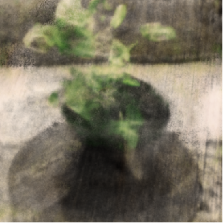

Image Synthesized
| Diffusion Input | Text Prompt | Image Condition | Before Fine-tuning | After Fine-tuning | Ground Truth |
- A high resolution hydrant

- 
- A high resolution plant
- A high resolution vase
1Beijing Institute of Technology †Corresponding Author
3D reconstruction methods such as Neural Radiance Fields (NeRFs) are capable of optimizing high-quality 3D scene representation from images. However, NeRF is limited by the requirement for a large number of multi-view images, making its application to real-world scenarios challenging. In this work, we propose a method that can reconstruct real-world scenes from a few input images and a simple text prompt. Specifically, we fine-tune a pretrained diffusion model to constrain its powerful priors to the visual inputs and generate 3D-aware images, leveraging the coarse renderings obtained from input images as the image condition, along with the text prompt as the text condition. Our fine-tuning method saves a significant amount of training time and GPU memory usage while also generating credible results. Moreover, to enable our method to have self-evaluation capabilities, we design a semantic switch to filter out generated images that do not match real scenes, ensuring that only informative priors from the fine-tuned diffusion model are distilled into the 3D model. The semantic switch we designed can be used as a plug-in and improve performance by 13%. We perform our approach on a real-world dataset and demonstrate competitive results compared to existing sparse-view 3D reconstruction methods.
The 3D reconstruction pipeline of our method. Our goal is to optimize a 3D model represented by NeRF, given sparse input views. First, we minimize a reconstruction loss \( \mathcal{L}_{\text{Recon}} \) between the rendered images and the real images under the input viewpoints. Then, given input images and a sampled novel view, we use a feature extractor to obtain a coarse RGB rendering(denoted as EFT image). We minimize a color loss \( \mathcal{L}_{\text{Color}} \) between the image rendered by NeRF and the EFT image under the sampled novel viewpoint. We take the rendered image as the input for the diffusion model, along with the EFT image as the image condition and text prompt as text condition, then we can have a generated image. Finally, we compute the CLIP features of the generated image and input images. When their similarity exceeds a threshold, we turn on the semantic switch and minimize a distillation loss \( \mathcal{L}_{\text{Distill}} \) between the rendered image and the generated image.
| Diffusion Input | Text Prompt | Image Condition | Before Fine-tuning | After Fine-tuning | Ground Truth |


| RegNeRF | FreeNeRF | FlipNeRF | DiffusioNeRF | SparseFusion | Ours | Ground Truth |
| RegNeRF | FreeNeRF | FlipNeRF | DiffusioNeRF | SparseFusion | Ours | Ground Truth |
| RegNeRF | FreeNeRF | FlipNeRF | DiffusioNeRF | SparseFusion | Ours | Ground Truth |